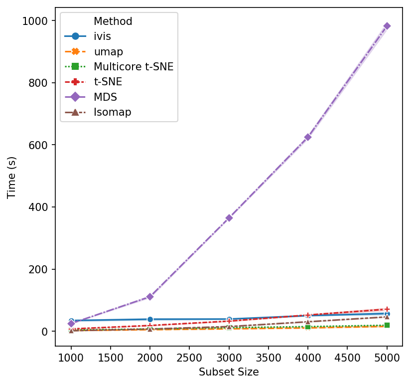

Ivis Runtime Benchmarks
Real-world datasets are becoming increasingly complex, both due to the number of observations and the ever-growing feature space. For example, single cell experiments can easily monitor 20,000 features across 1,000,000 observations.
Dimensionality reduction (DR) algorithms enable useful exploration of feature-rich datasets. Nevertheless, each algorithm has different computational complexity that impacts its real-world use case. We will now investigate how runtime performance of the ivis algorithm scales with increasing dataset size.
Algorithm implementation has significant impact on performance. In these experiments, we will use mainly scikit-learn implementation, with the exception of multicore t-SNE. Two benchmark datasets will be used to asses runtimes: MNIST (up to 70,000 observations) and the first 1,000,000 integers represented as binary vectors indicating their prime factors. For all algorithms, default settings were adopted. Ivis hyperparameters were fixed to: embedding_dims=2, k=15, model=’szubert’, and n_epochs_without_progress=3. Our previous experiments have shown that these defaults yield accurate embeddings.
Subsamples were created using scikit-learn’s resample method, producing stratified random sub-samples. For each run, three random subsamples were generated to create a distribution of values. All runs were carried out on a 16-core machine with 32GB of RAM.
Effects of Data Size on Performance
We begin with small subsample sizes – 1,000 to 5,000 observations. It becomes clear that MDS will not be usable as we increase subsample sizes. Additionally, scikit-learn’s implementation of t-SNE is beginning to slow down as we approach 5,000 subsamples. UMAP and multicore t-SNE perform very well.
That’s a reasonable start - let’s increase the subset size. Isomap and scikit-learn’s t-SNE seem to have reached their performance threshold and are now experiencing considerable slow down. ivis appears to be on-par with multicore t-SNE, albeit a little faster, whilst UMAP is the winner hands down!
Now, let’s push beyond toy datasets and examine sizes that are more likely to be encountered in real-world problems. For this experiment we generated 1,000,000 integers (observations) with corresponding binary vectors indicating their prime factors (features). We immediately see that ivis is fast. Additionally, whilst UMAP timings increase exponentially, ivis execution speed does not change much on subsamples with greater than 750,000 observations.
We can conclude that for smaller datasets (< 100,000 observations), UMAP and multicore t-SNE are excellent options. However, ivis excels at dealing with very large datasets. Furthermore, ivis appears to generate more accurate embeddings – a perk that comes with a slightly longer runtime for smaller datasets.